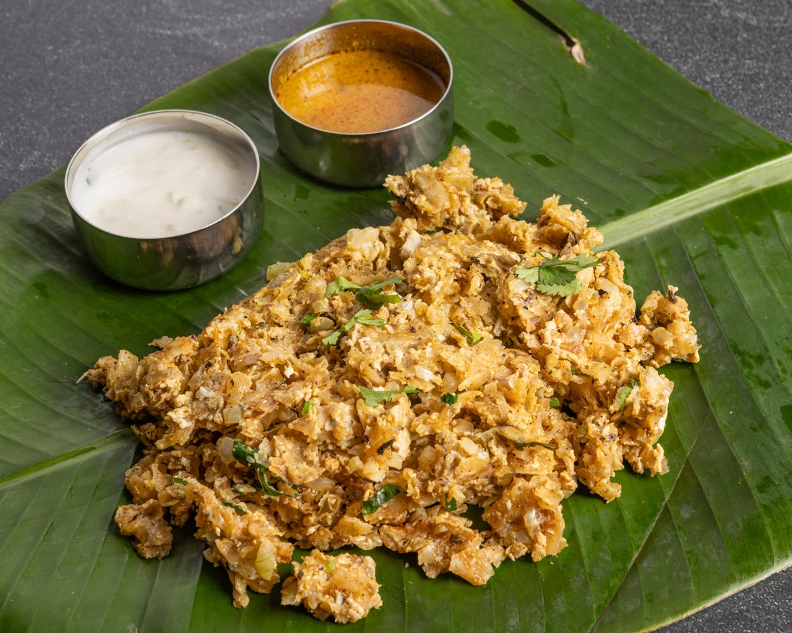
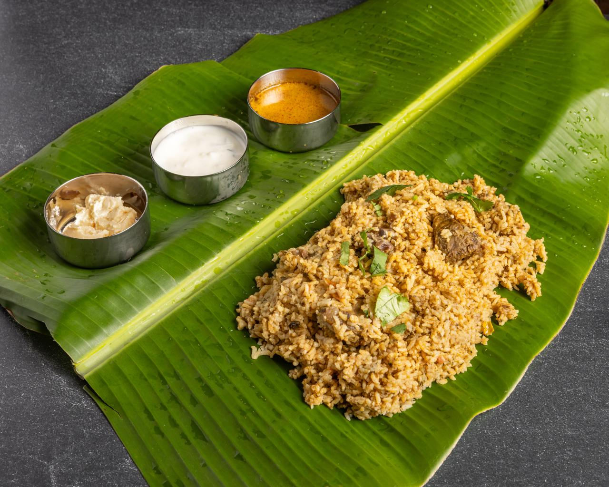
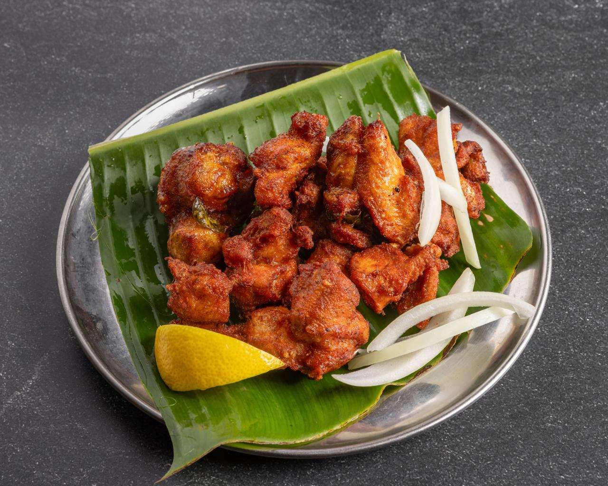

Dish guide
Shredded parotta worked on a hot griddle with egg, gravy and masala — and why the chopping is not showmanship.
12 July 2026
Read the guide →

Ingredient guide
The tiny cumin-shaped grain that drinks up mutton stock and ghee instead of sitting beside them.
26 July 2026
Read the guide →
Drink guide
Chilled sweetened milk, nannari syrup, almond gum and ice cream — built in layers, not blended.
9 August 2026
Read the guide →

Ordering guide
A four-course first order for two, and a straight answer on how spicy Tamil food actually is.
23 August 2026
Read the guide →
Hungry now?
Everything we write about is on the menu in Toongabbie — dine in, pick up, or order delivery.